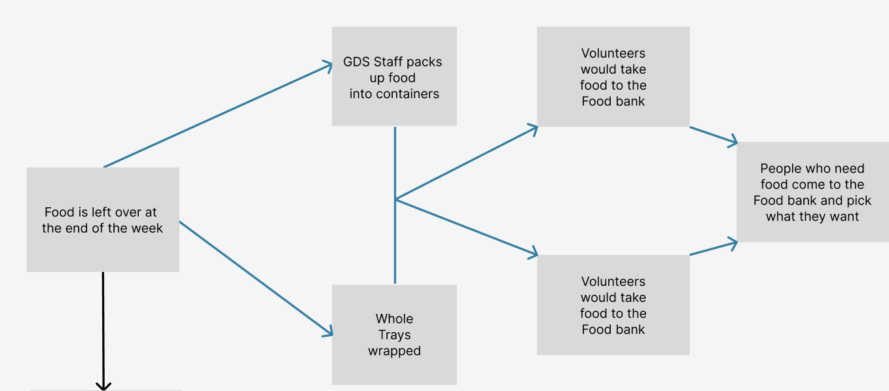
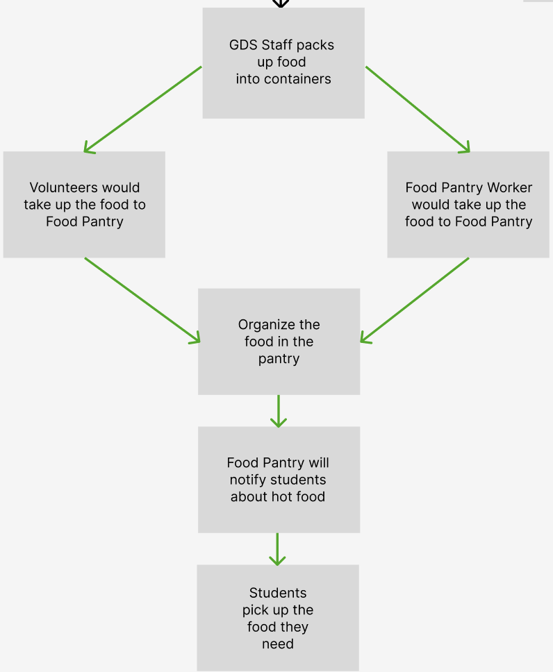
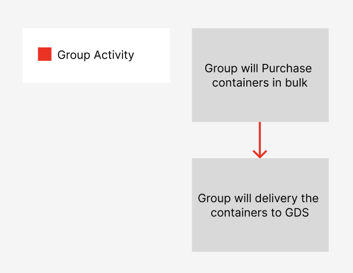

About Project
This project addressed the dual challenge of food waste and food insecurity at NJIT and in the surrounding Newark community. The initiative proposed a pilot program to repurpose surplus food from the NJIT Gourmet Dining Services (GDS) to support the campus food pantry and local food banks. The effort combined sustainability, community impact, and logistical innovation.
Key Contributions:
- Research and Data Collection:
- Conducted interviews with GDS management and food pantry directors to understand the scale of food waste and food insecurity.
- Identified operational inefficiencies, including GDS's lack of food waste tracking and the food pantry's limited resources despite growing demand.
- Analyzed food insecurity data for New Jersey, highlighting the need for action within the NJIT community.
- System Design and Logistics:
- Created a framework to redistribute GDS’s leftover food:
- Food would be packaged in disposable, single-use containers to maintain hygiene and comply with health regulations.
- Half of the leftovers would be delivered to NJIT’s food pantry, and the other half to local food banks like the Pierre Toussaint Food Pantry.
- Proposed a weekly distribution schedule on Wednesdays, selected for high campus activity and availability of volunteers.
- Collaboration with Stakeholders:
- Coordinated with NJIT’s Students for Hunger Relief club to recruit volunteers for food transport.
- Partnered with local food banks to establish pick-up and delivery routines, including support for bulk trays of leftovers.
- Engaged the NJIT Honors College community to encourage volunteer participation through community service hour incentives.
- Prototyping and Cost Analysis:
- Coordinated with NJIT’s Students for Hunger Relief club to recruit volunteers for food transport.
- Calculated monthly container costs at $11.99 per 50 units, proposing minimal funding support from NJIT.
- Ensured packaging adhered to New Jersey health codes for food safety and sanitation.
Outcome
- Sustainability: Reduced food waste by repurposing leftovers, and promoting environmental responsibility.
- Community Support: Addressed food insecurity for NJIT students and Newark residents by providing fresh, nutritious meals.
- Scalability: Established a pilot program with potential for expansion based on initial success metrics, such as student satisfaction and food distribution efficiency.
- Applied project management principles to coordinate multiple stakeholders.
- Gained experience in sustainability-focused system design and food logistics.
- Enhanced skills in collaborative problem-solving, stakeholder engagement, and cost-effective planning.
- Strengthened knowledge of health and safety regulations for food handling.
Impact and Outcomes:
Key Learning and Skills Developed:
Gallery


